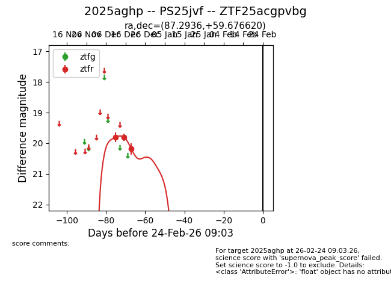
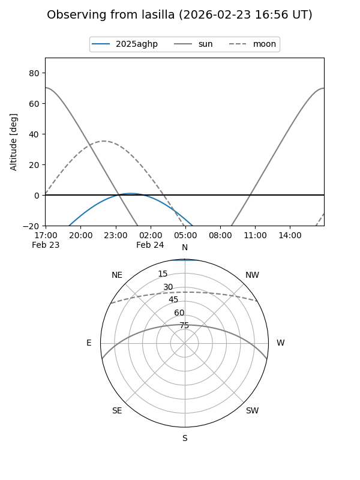
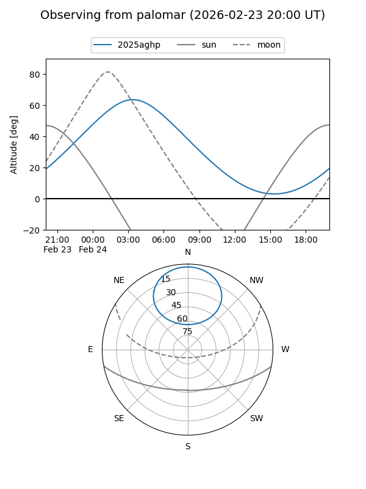
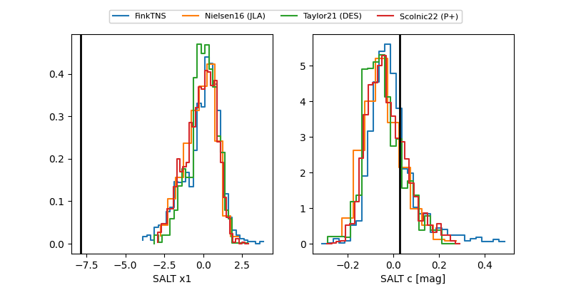

2025aghp
Target 2025aghp at 2025-12-21 08:18
Aliases and brokers:
FINK: fink-portal.org/ZTF25acgpvbg
Lasair: lasair-ztf.lsst.ac.uk/objects/ZTF25acgpvbg
ALeRCE: alerce.online/object/ZTF25acgpvbg
TNS: wis-tns.org/object/2025aghp
YSE: ziggy.ucolick.org/yse/transient_detail/2025aghp
alt names
ZTF25acgpvbg (ztf,fink_ztf)
2025aghp (tns,yse)
Coordinates:
equatorial (ra, dec) = 87.2936,+59.67662
equatorial (HMS+DMS) = 05:49:10.46,+59:40:35.83
galactic (l, b) = (153.3011,+15.84421)
Flags:
Photometry:
last ztfr=20.19
3 ztfr detections
Lightcurve

Visibility


Additional plots
